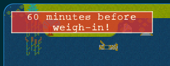
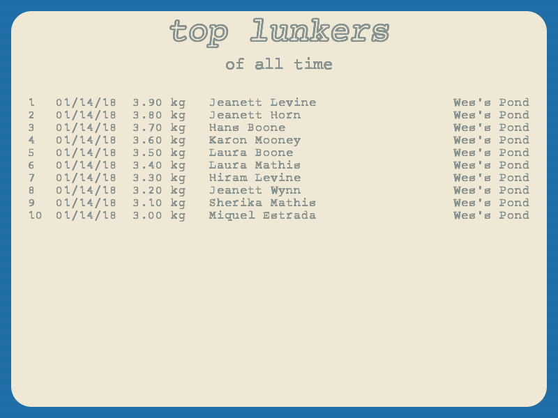

tournament
The tournament lasts for 3 days, with 6 hours of fishing time per day. Register your name and select the location to fish. The contour map shows the launching docks (yellow dots), you will be assigned a dock automatically when the tournament starts.
When ready to fish, launch your boat.
launching dock
Your launching dock can be different on each day of the tournament, you start next to this dock and you must return to it for weigh-in, before the day ends.
weigh in
If you miss the weigh-in you forfeit your daily catches. So be sure not to miss it! To help remind yourself, you set your wristwatch alarm 30 minutes before weigh-in.

To weigh in, simply return to your dock (at least 2 tiles away) and turn your outboard motor off. See navigating for more on using your boat.
The top 10 daily standings are shown, with your name in green. If you had the misfortune of placing below 10th position, your name is still listed at the very bottom.
Click or press any key to start the next day of the tournament.

tournament results
After you fished all 3 days, your daily weights are totalled up for the final tournament results.
top lunkers of all time
If you are lucky or skilled enough to catch a big fish, your name is added to the wall of top lunkers, which persists between tournaments so you always have proof of the big one that didn't get away.
